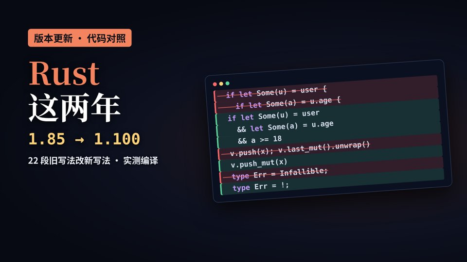
Rust 这两年：从 1.85 到 1.100
16 个稳定版、22 段代码从旧写法改成新写法：2024 版次与异步闭包、let 链、if let 守卫、向上转换、从未类型 !、get_disjoint_mut、extract_if、push_mut、cfg_select!、文件锁、自定义分配器，以及 Cargo 的警告配置、未用依赖检查和依赖冷却期。旧写法用 rustc 1.84、新写法用 rustc 1.100 实测编译。
AI 协作制作的讲解视频与调研资料的网页版本。视频页面就是生成视频时逐帧渲染的同一套代码，在浏览器里可以直接播放、拖动（无配音，字幕同步）；视频文件本身不放在这里。

16 个稳定版、22 段代码从旧写法改成新写法：2024 版次与异步闭包、let 链、if let 守卫、向上转换、从未类型 !、get_disjoint_mut、extract_if、push_mut、cfg_select!、文件锁、自定义分配器，以及 Cargo 的警告配置、未用依赖检查和依赖冷却期。旧写法用 rustc 1.84、新写法用 rustc 1.100 实测编译。
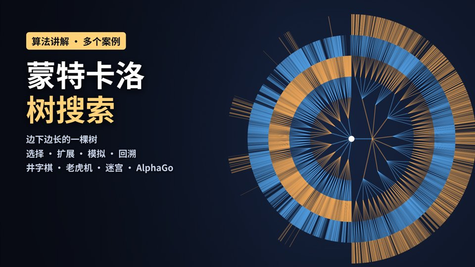
从老虎机和 UCB 讲起，看选择、扩展、模拟、回传四步怎样让一棵树越长越偏向好棋：井字棋里纠正随机模拟的误判、迷宫寻路、围棋与 AlphaGo 的 PUCT、线与膜、语言模型推理，以及陷阱局面和常见变体。互动页面可以和井字棋电脑对弈、慢放每一轮搜索、比较三种老虎机策略、在迷宫里改墙看搜索热图。
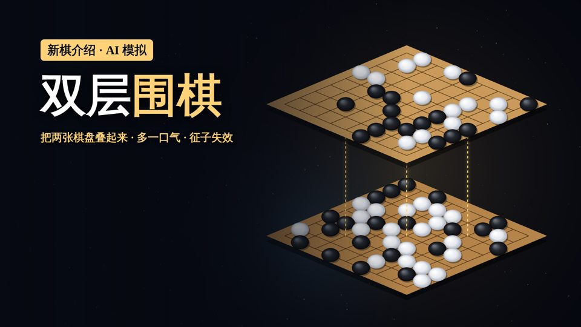
两张棋盘上下叠放，每个点多一个邻居：正对着的另一层。规则、为什么不选三维立方或双曲平面、跨层做眼与征子失效、九种棋盘的模拟数据和一盘 9×9×2 自对弈回放。网页版可以直接下：立体视图（线框棋盘、玻璃棋子、上下层交换动画）、气数标签与编号、落子预览、悔棋、数子、电脑对手。
2026 年 11 月虚幻引擎 5.9 预览版“主要由智能体构建”：做了什么、代价是什么；智能体如何通过 MCP 接入编辑器、一次公开实测的成败与额度消耗、三个瓶颈与安全问题；虚幻引擎 6 去掉蓝图改用 Verse，以及 Unity 的同类动向。
按公司规模和行业场景讲软件怎样从代码变成线上服务：初创公司的流水线，几百个服务的平台与灰度，电商大促、金融合规、游戏发服等不能出错的日子，移动应用、设备固件这类发出去就收不回来的发布，以及 AI 带来的变化。
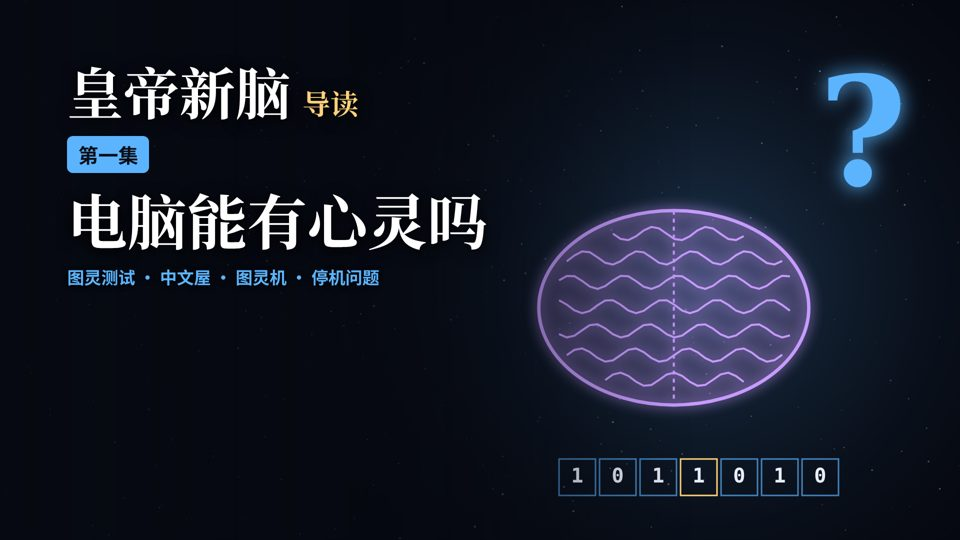
彭罗斯《皇帝新脑》按原书十章加尾声的导读：图灵测试与中文屋、可计算性与哥德尔、柏拉图式的数学世界、经典物理与量子之谜、时间之箭与量子引力，以及“意识不可计算”的论点和主要反对意见，补充 1989–2026 年的进展。
把约 250 项物理学成果按完成时所在的城市钉在世界地图上，跟着时间轴看物理学中心从爱奥尼亚、亚历山大港、巴格达迁到剑桥、哥廷根、普林斯顿和今天的大型实验室。互动地图使用同一份数据，可拖动时间轴查看。
把约 215 项数学成果按完成时所在的城市钉在世界地图上，看数学中心怎样从两河流域、亚历山大港、长安与巴格达一路迁到巴黎、哥廷根、普林斯顿和今天遍布世界的大学。互动地图使用同一份数据。
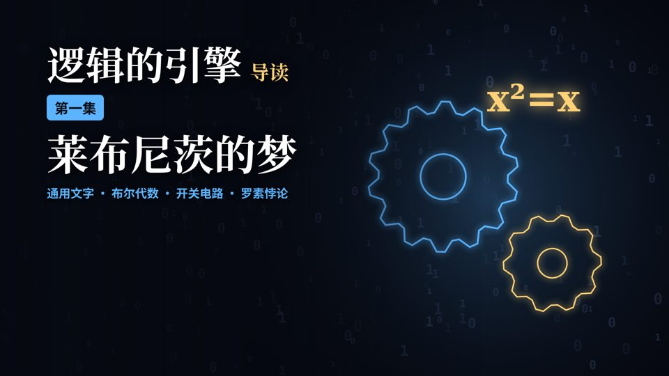
马丁·戴维斯《逻辑的引擎》按原书九章的导读：莱布尼茨的通用语言、布尔与弗雷格、康托尔的无穷与悖论、希尔伯特计划与哥德尔、图灵的通用机器与第一批计算机，补充 2000–2026 年的进展。
架空推演：一位守将、一条每天不到一吨的穿越通道，怎样逐周救下一座不到千人的孤城。口粮、防疫、练兵、外交分化与拓土，按周记账，价格按今天的市场粗略估算。
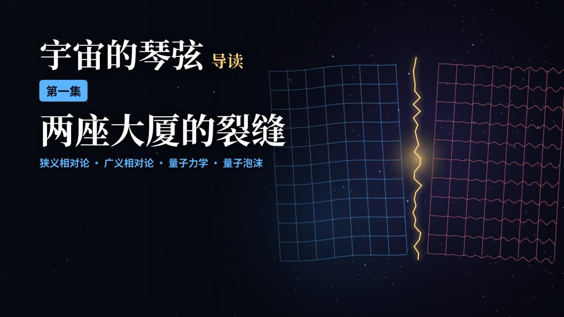
布赖恩·格林《宇宙的琴弦》导读：相对论与量子力学的冲突，弦的振动、超对称与卷起来的额外维度，T 对偶、M 理论与黑洞熵，补充 1999–2026 年的进展。
按问题拆解开放世界的工程：第一集装得下（流式加载、大世界坐标、Nanite、剔除、IO）；第二集画得出（地形、植被、Lumen、天空与云、帧预算）；第三集造得出（噪声与侵蚀、PCG 散布、扫描资产、工具与协作、玩法填充）；第四集活起来（NPC 与 ECS、物理、存档、多人同步、AI 浪潮）。每集对照虚幻引擎五、Unity、Godot，附代码卡、“昙花一现”与角色技能，最后是九方向技能地图。
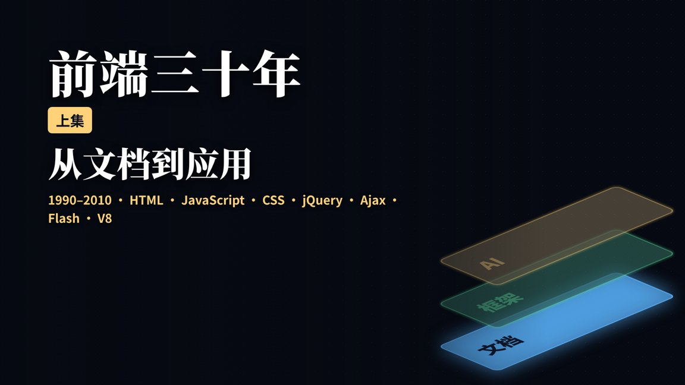
不按年份罗列，而按问题梳理：上集从文档到应用（WWW、JavaScript、CSS、兼容性与 jQuery、Ajax、插件与 HTML5、V8 与 Node）；中集框架与工程化（模块化、MV* 到 React/Vue、TypeScript、CSS 规模化、多端、工具链）；下集渲染的钟摆、编译器与 Signals、Rust 工具链、Wasm/WebGPU 与 AI 浪潮。每集附“昙花一现”的淘汰方案。
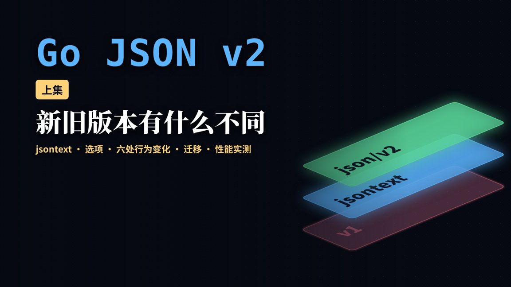
上集讲 Go 1.27 的 encoding/json v2：v1 的问题、jsontext 与 json/v2 的两层架构、选项与标签、六处行为变化、迁移与 nojsonv2、官方说法与 Lemire / #81315 等独立实测；下集把它和 Go 第三方库、Rust（serde、simd-json、sonic-rs、facet）、C/C++（simdjson、yyjson、glaze）以及 Java JEP 540 放在一起比较原理、写法与公开数字。
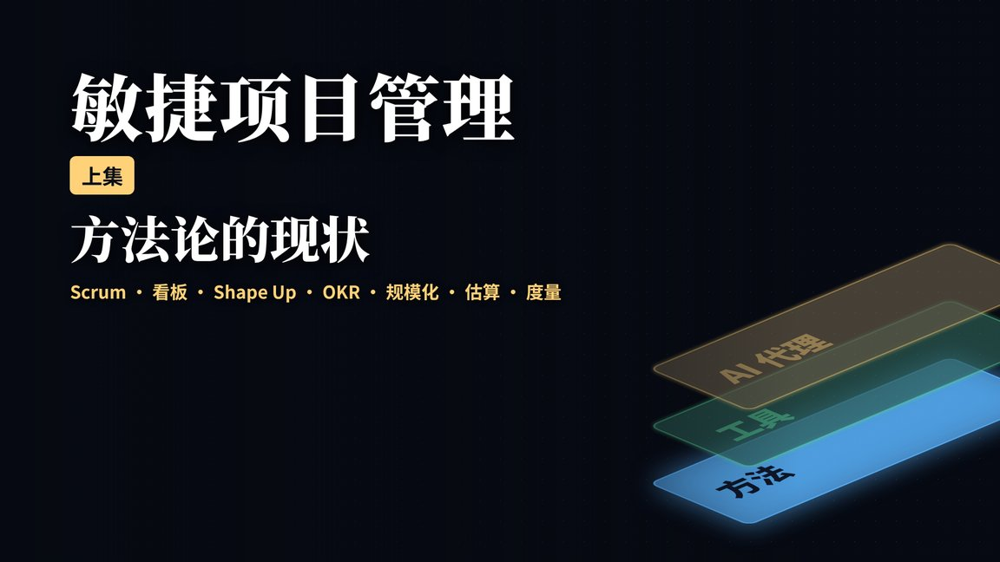
早期历史一分钟带过，重点在近几年：上集讲方法（Scrum 与 2025 扩展包、看板与流动指标、Shape Up、OKR 与路线图、规模化、概率预测、DORA 指标）；中集讲工具（Jira、Linear、GitHub、Asana、Notion、飞书项目等，附官方页面截图，以及近几年的趋势与选型）；下集讲 AI 时代：任务可以分配给代理、AI 做管理工作、方法与角色的变化、风险与护栏。
以活动报名网站为例（登录、报名、在线付费、确认邮件、后台）：上集从需求讲到本地和预发布跑起来（用户故事、选型、与 AI 代理协作、支付回调的验签与幂等、数据模型、环境）；中集讲上线（流水线、部署与回滚、先加后删、证书、安全基线、性能、发布）；下集讲维护（可观测性、事故处理、备份、成本、安全、AI 参与运维的边界）。配套一页可勾选的检查清单。
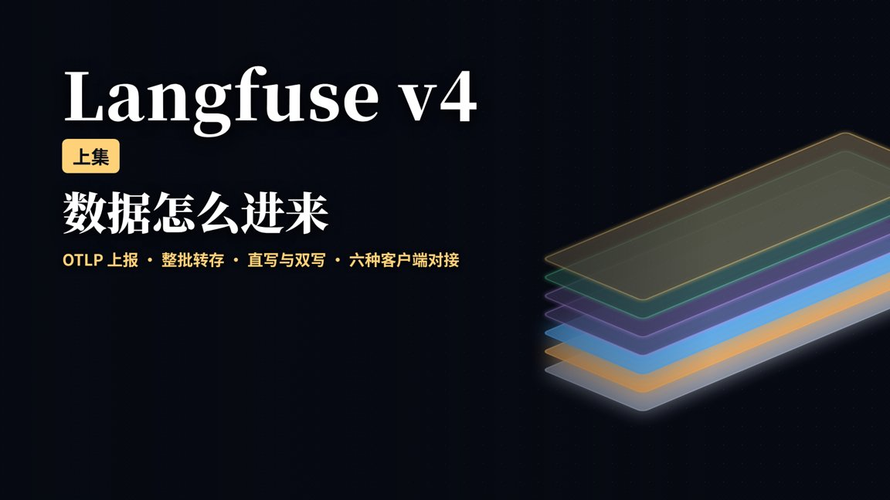
按 Langfuse 主干源码核对的数据链路讲解：上集讲数据怎么进来（OTLP 上报、整批转存、直写与双写、六种客户端对接）；中集讲 events_full / events_core 表结构、七层格式转换、大体积数据的七道关口和导出；下集讲 v3 到 v4 的改造原理、迁移模式与企业三层脱敏方案。配套参考网页列出格式表、回调契约、环境变量与代码位置。
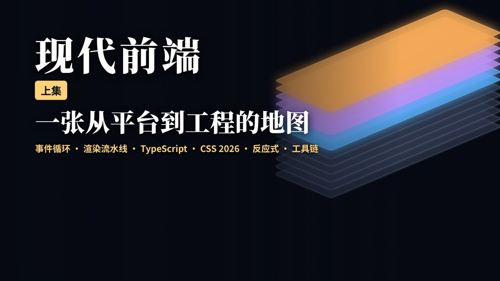
桌面浏览器里的前端知识与优化体系：上集把平台、语言、框架、工程画成一张十层地图（事件循环、渲染流水线、TypeScript 7、CSS 2026、三种反应式模型、Rust 工具链、供应链）；中集讲优化闭环（Core Web Vitals、关键路径、摇树、布局抖动、虚拟化、切片与 Worker、内存泄漏）；下集讲桌面级应用的架构与 Electron / Tauri / PWA 客户端。全部画面为程序动画。
2049 年，整座西湖已被建模成层层可叠的数字湖。凌晨清场后只剩一个夜间维护工，戴着能看见任何时刻的全时镜，天天去串古人的门，却不肯打开亡妻所在的"回忆层"——直到一个从 2089 年拨回来的人问他"你是真的吗"。23 张 Wikimedia Commons 公开授权实景照片 + Gemini 生成的人物图层，层剥落、点云重落位、条带拼接等效果实时渲染。
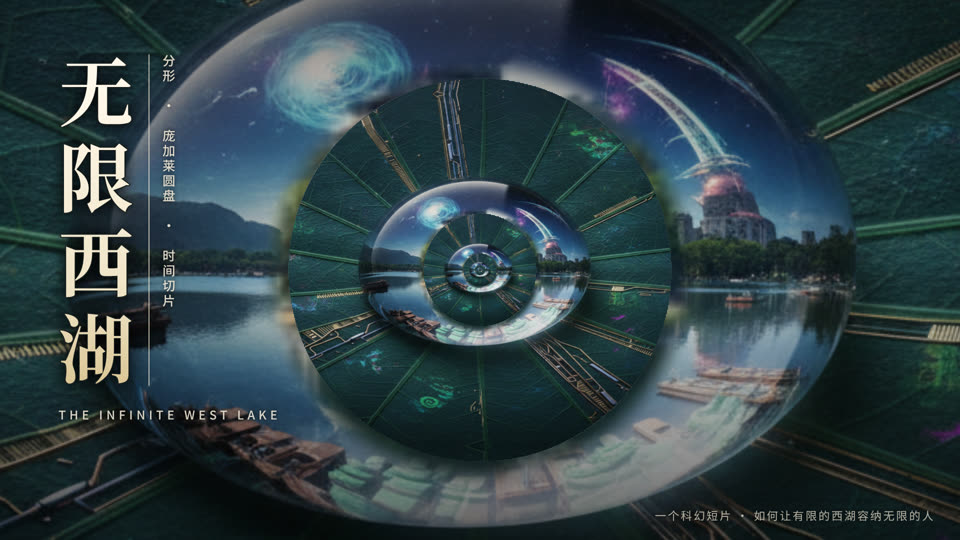
西湖太挤了，于是假想三种把有限的湖"放大"的办法：分形（每片荷叶里一整个西湖）、庞加莱圆盘（边缘是无限远）、时间切片（唐宋明今叠在同一片水上）。68 张 AI 生成画面，Droste 递归、双曲镶嵌与时间片效果由着色器实时渲染。
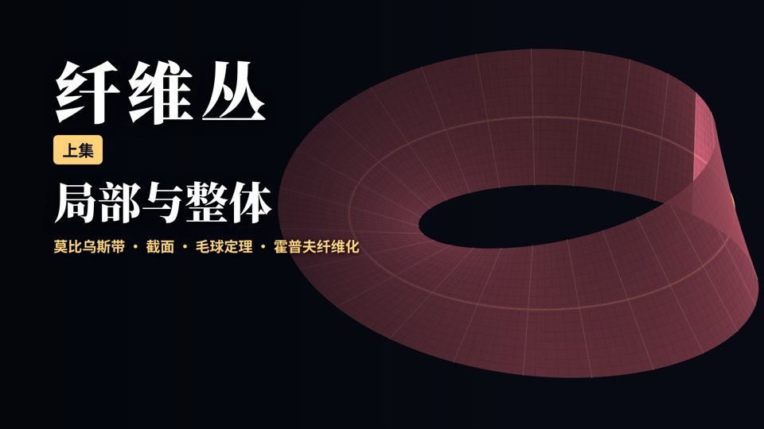
局部是乘积、整体可以扭转的空间：为什么研究纤维丛，莫比乌斯带、转移函数、截面、毛球定理、霍普夫纤维化，联络、和乐与陈数，以及傅科摆、磁单极、AB 效应、贝里相位、量子霍尔电阻标准等用途。22 张程序绘制的图。
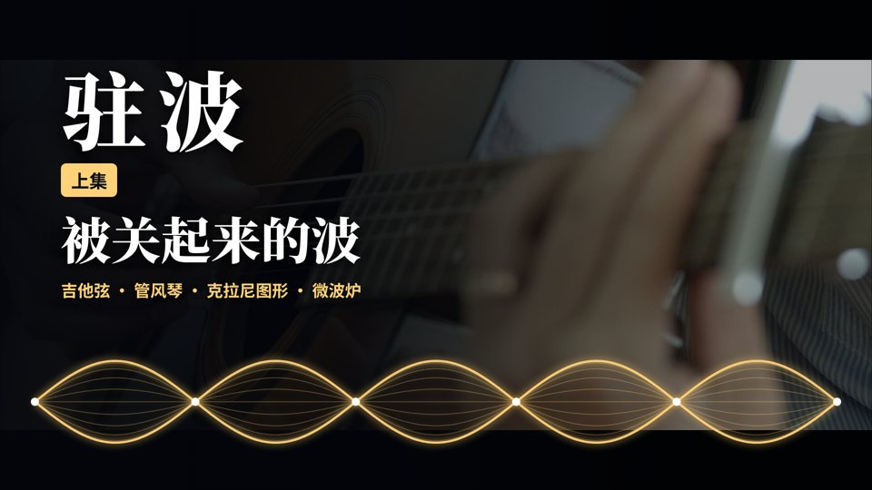
波被关进有边界的空间：弦、管、克拉尼图形、鼓膜、微波炉与激光腔；再到湖泊假潮、地球自由振荡、日震学、桥梁、原子轨道和宇宙微波背景的声学峰。图库收录 27 张自绘图与 40 张 Wikimedia Commons 图片。
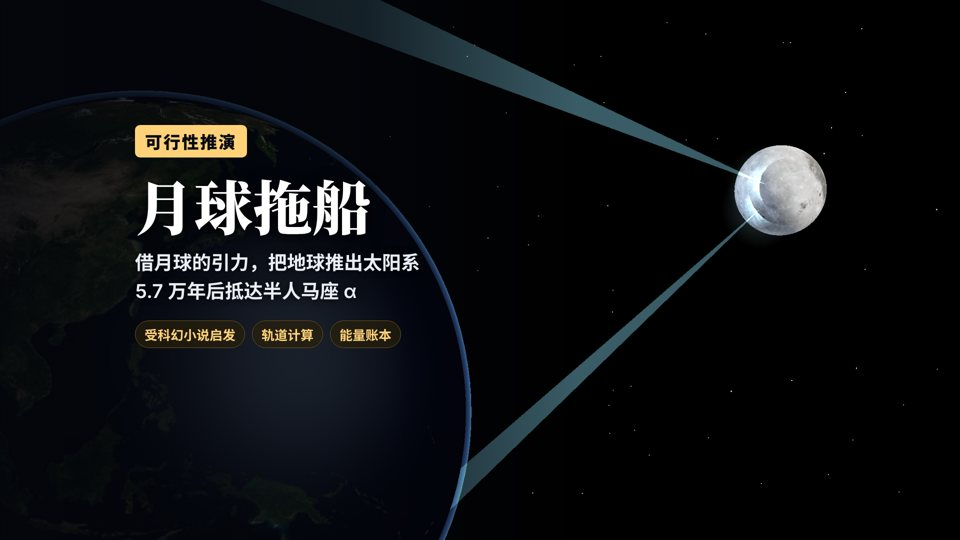
受《流浪地球》启发的另一种方案：月球悬停在离地球约 11 万公里处做引力拖船，27 年里在近日点附近点火，第 28 年脱离太阳，约 5.7 万年后与半人马座 α 相遇。除聚变发动机外按已知物理推算。
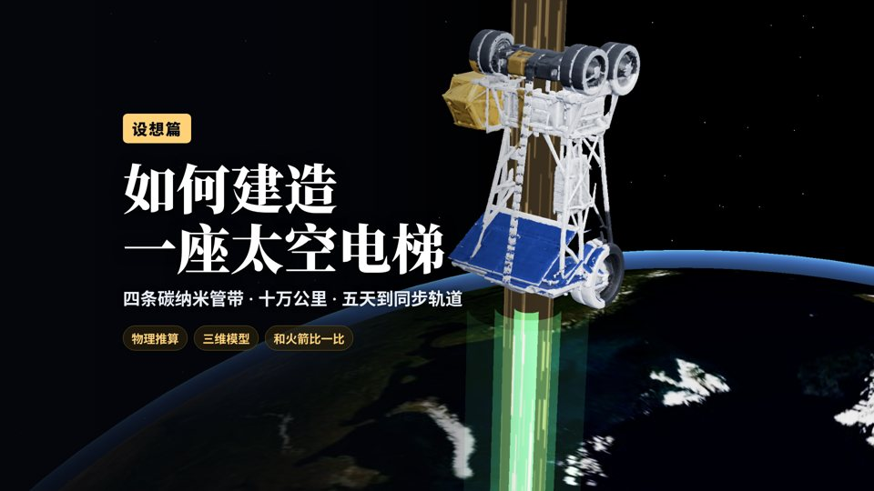
假设能量产碳纳米管带，按物理把一座太空电梯从头搭起来：带子为什么不掉、什么材料够用、怎样从太空往下放、电梯厢怎么爬、一年能运多少货，以及和发射环、天钩等方案的比较。三维模型由 Tripo 生成后按部件上色。
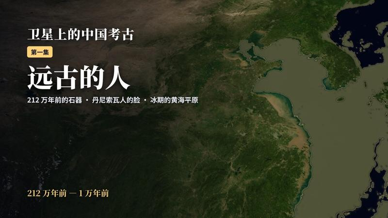
把考古遗址放回卫星地图，同时拨动时间轴：从 212 万年前的上陈、丹尼索瓦人、冰期的黄海平原，到稻与粟、良渚水坝与石峁石城、西来的小麦与青铜、二里头，再到殷墟、三星堆与丝绸之路。互动地图可拖动时间轴、点开每个遗址的卫星近景。
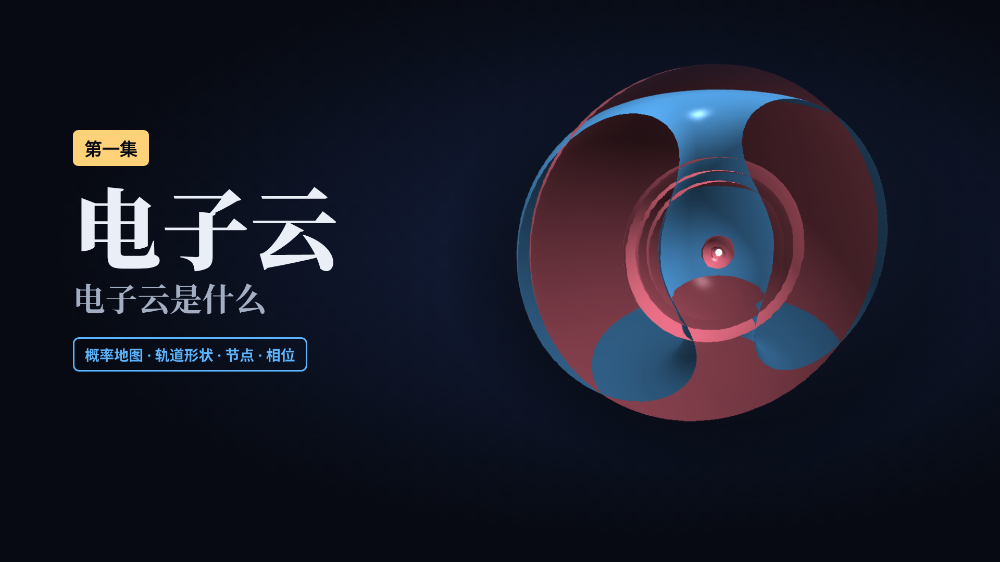
把电子云真的算出来、画成 3D 点云：从氢原子读懂电子云，按顺序走遍 118 种元素，再用 25 个化学反应看电子云怎么流动。互动页可任选元素和反应，切换点云、包络面、剖开实体与截面。
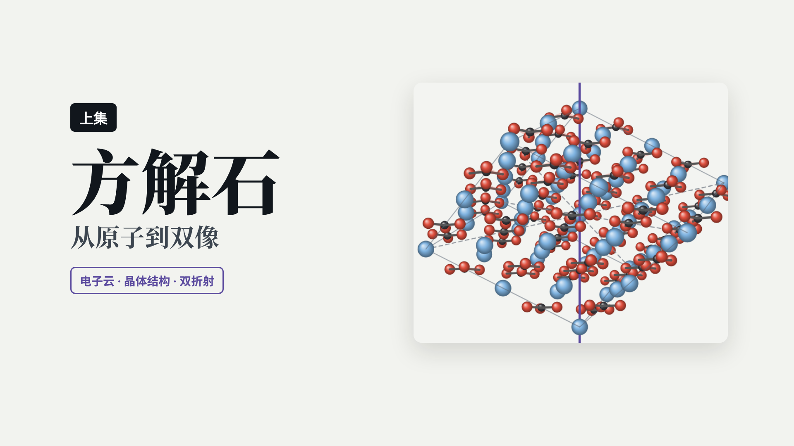
从钙离子与碳酸根的电子云出发，按实测原子坐标搭出方解石晶体，解释双折射、菱形解理、低硬度、机械孪晶、反向热膨胀、振动光谱、遇酸起泡、热分解与杂质发光。
从 1996 年的 sRGB 到 CSS Color 4 / 5 与 oklch；屏幕色域、色彩管理、HDR 与增益图；手机、电视与 visionOS 等 XR 平台；以及推动这些变化的人和组织。
int n 还是 n: Int：名字携带类型、类型在前（ALGOL → C）、类型在后（Pascal / ML）三条主线；解析歧义、泛型尖括号、推断、动态语言的类型，以及给新语言的设计清单。
可以恢复的异常：从定界续延、单子到 Plotkin 的作用处理器；异常、注入、生成器、协程、回溯的统一写法；作用类型，以及纤程、证据传递、CPS、WasmFX 四种实现。
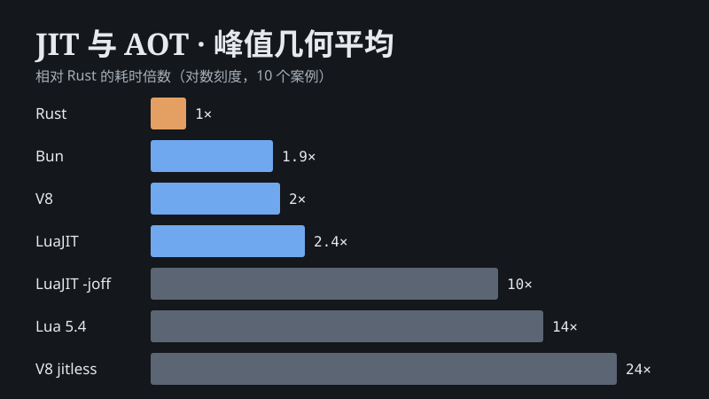
V8、Bun、LuaJIT、Rust、LLVM（AOT / ORC JIT / Wasm）在 10 个同算法案例上的峰值、首轮、预热、启动、内存与构建成本，配公开基准与论文。云沙箱实测，只看倍数。
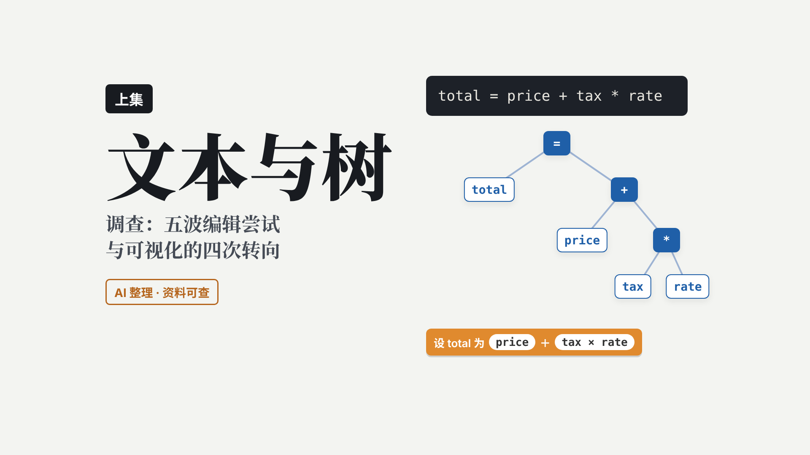
代码结构化编辑与代码可视化：五波尝试的调查、八条规律、AI 背景下的八个判断；番外逐个演示十个结构化编辑器的实际操作。
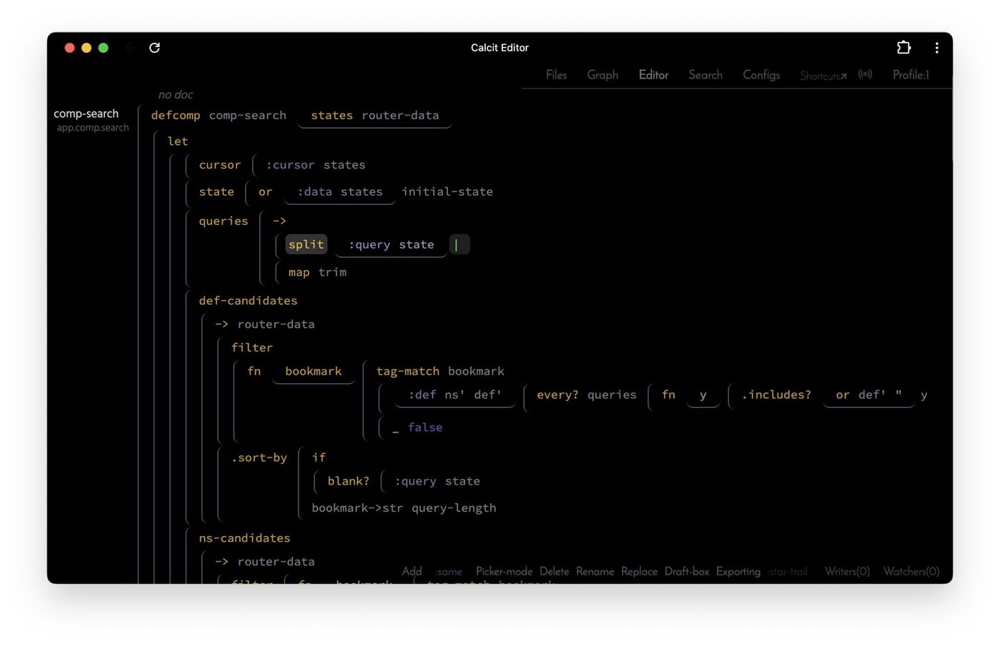
代码结构化编辑与代码可视化：五波尝试的得失、对比表、规律与 AI 背景下的判断。三集视频的提纲与调研。
1628–1636 年小说中的工程、建筑与航线，卫星图今昔对照。AI 整理，未经逐章核实。
上集讲心理学原理与方法论，下集讲搭建一套设计规范：颜色、排版、动效、装饰与治理。
图片来源与授权见各页面标注。源码与稿子：github.com/Memkits/desk